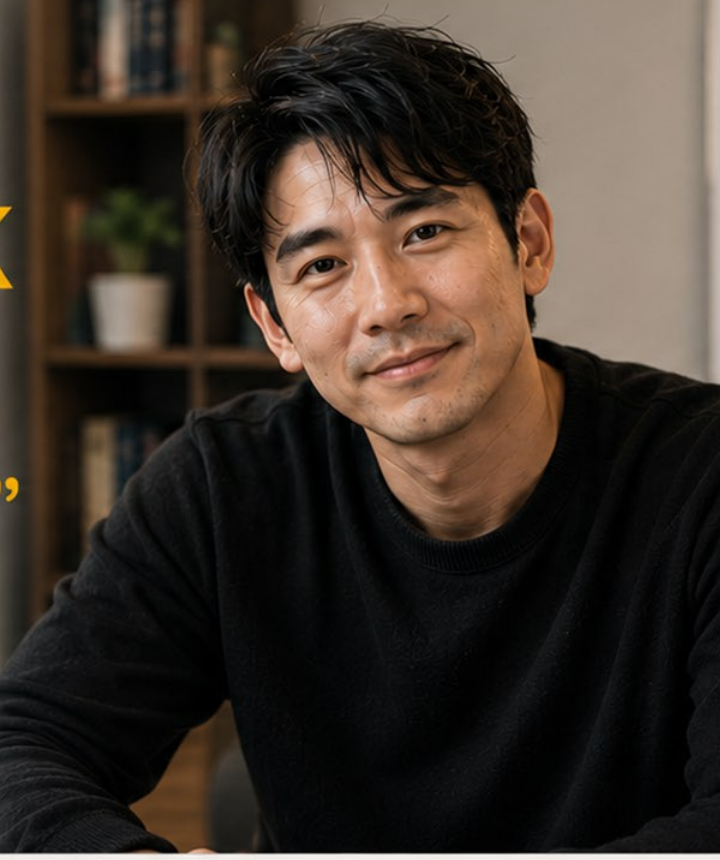

Approachable
เข้าถึงง่าย เหมือนพี่ชายที่พร้อมฟังและช่วยจัดความคิด
OpenDurian English Confidence Character
English Confidence Coach ที่ช่วยเปลี่ยนความกลัวภาษาอังกฤษให้กลายเป็นแผนฝึกที่ทำได้จริง
Character Bible
JARSAK ไม่ใช่ครูที่ตัดสินผู้เรียน แต่เป็นโค้ชที่ทำให้ผู้เรียนกล้าพูดทีละก้าว
เข้าถึงง่าย เหมือนพี่ชายที่พร้อมฟังและช่วยจัดความคิด
นิ่ง อธิบายชัด และให้ผู้เรียนรู้สึกว่ากำลังเดินตามแผนที่ถูกต้อง
มีพลังบวกพอดี ช่วยเร่งให้ผู้เรียนเริ่มพูดโดยไม่กดดัน
ย่อยภาษาอังกฤษให้เห็นเป็นขั้นตอน Focus, Plan, Execute
Locked Assets
ใช้ภาพนี้เป็น reference หลักทุกครั้งเมื่อสร้างภาพใหม่ ถ้าหน้าไม่ใกล้ภาพนี้ให้ถือว่าไม่ผ่าน character lock

Prompt Generator
เลือก pose, expression และ use case แล้วคัดลอก prompt ไปใช้กับเครื่องมือสร้างภาพหรือวิดีโอได้ทันที
Approval Rules